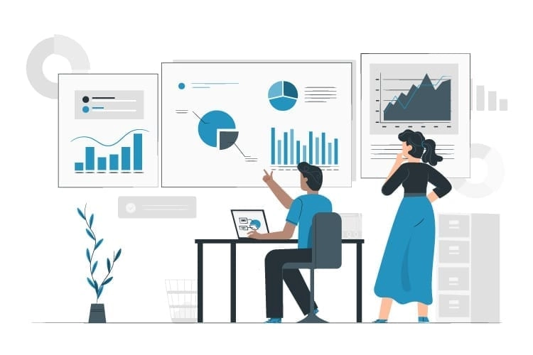

A project introduction is a paragraph or paragraphs explaining what a project is about. It should include key details about the project that give the reader enough information to understand the purpose and scope of the project..
Simply put, a project is a series of tasks that need to be completed to reach a specific outcome. A project can also be defined as a set of inputs and outputs required to achieve a particular goal. Projects can range from simple to complex and can be managed by one person or a hundred.
Guidelines for preparing the Introduction for project work:
- Be short and crisp: .
- Be clear in what you write: .
- Give background information: .
- Explain the reasons in the introduction: .
- The problems should be highlighted: .
- Explain why it is important to you: .
- The outline or the blueprint of the content: .

Lead management is the strategy that sales teams use to understand which stages of the pipeline their deals are in. This tracking helps sales teams know whether a lead or prospect is on a path to closing. Many companies choose to use software that streamlines this process and uses automation to encourage leads through the sales process with workflows and targeted marketing.
HubSpot lead management software does exactly that. Instead of using manual tracking, let your sales team leverage the power of a fully automated tracking system. Instead of manually triggering flows or reaching out manually, they'll be able to use HubSpot lead management smart functionality to trigger interaction at exactly the right time.

Project data analytics, at its simplest, is the use of past and current project data to enable effective decisions on project delivery. This includes: Descriptive analytics presenting data in the most effective format. Predictive analytics using past data to predict future performance.
Managers and executives can use analytics to spot early symptoms of budget, cost, and timeline slippages and take corrective action. Managers can also use analytics to capture the velocity of work, making it easier to estimate whether a project will be completed on schedule.

A project plan—sometimes called a work plan—is a blueprint of the goals, objectives, and tasks your team needs to accomplish for a specific project. Your project plan should include information about your project schedule, scope, due dates, and deliverables for all phases of the project lifecycle.
HubSpot lead management software does exactly that. Instead of using manual tracking, let your sales team leverage the power of a fully automated tracking system. Instead of manually triggering flows or reaching out manually, they'll be able to use HubSpot lead management smart functionality to trigger interaction at exactly the right time.
A project plan template is a document that creates a standard format for a project plan. Typically, it contains a list of the essential elements of a project, such as stakeholders, scope, timelines, estimated cost and communication methods. The project manager typically lists the information based on the assignment.

Project management is the application of processes, methods, skills, knowledge and experience to achieve specific project objectives according to the project acceptance criteria within agreed parameters. Project management has final deliverables that are constrained to a finite timescale and budget.
The project life cycle includes the steps required for project managers to successfully manage a project from start to finish. There are five phases to the project life cycle. Each of these project phases represents a group of interrelated processes that must take place for a successful project.